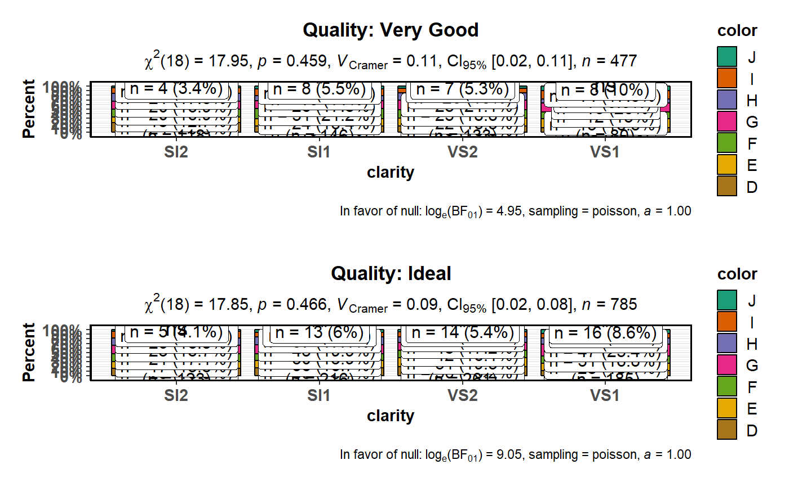

Grouped bar (column) charts with statistical tests
Source:R/grouped_ggbarstats.R
grouped_ggbarstats.RdHelper function for ggstatsplot::ggbarstats to apply this
function across multiple levels of a given factor and combining the
resulting plots using ggstatsplot::combine_plots.
grouped_ggbarstats(data, main, condition, counts = NULL, grouping.var, title.prefix = NULL, ratio = NULL, paired = FALSE, results.subtitle = TRUE, labels.legend = NULL, stat.title = NULL, sample.size.label = TRUE, label.separator = " ", label.text.size = 4, label.fill.color = "white", label.fill.alpha = 1, bar.outline.color = "black", bf.message = TRUE, sampling.plan = "indepMulti", fixed.margin = "rows", prior.concentration = 1, subtitle = NULL, caption = NULL, legend.position = "right", x.axis.orientation = NULL, conf.level = 0.95, nboot = 100, simulate.p.value = FALSE, B = 2000, legend.title = NULL, xlab = NULL, ylab = "Percent", k = 2, perc.k = 0, bar.label = "percentage", data.label = NULL, bar.proptest = TRUE, ggtheme = ggplot2::theme_bw(), ggstatsplot.layer = TRUE, package = "RColorBrewer", palette = "Dark2", direction = 1, ggplot.component = NULL, return = "plot", messages = TRUE, ...)
Arguments
| data | A dataframe (or a tibble) from which variables specified are to be taken. A matrix or tables will not be accepted. |
|---|---|
| main | The variable to use as the rows in the contingency table. |
| condition | The variable to use as the columns in the contingency table. |
| counts | A string naming a variable in data containing counts, or |
| grouping.var | A single grouping variable (can be entered either as a
bare name |
| title.prefix | Character string specifying the prefix text for the fixed
plot title (name of each factor level) (Default: |
| ratio | A vector of numbers: the expected proportions for the proportion
test. Default is |
| paired | Logical indicating whether data came from a within-subjects
design study (Default: |
| results.subtitle | Decides whether the results of statistical tests are
to be displayed as a subtitle (Default: |
| labels.legend | A character vector with custom labels for levels of
the |
| stat.title | Title for the effect being investigated with the chi-square
test. The default is |
| sample.size.label | Logical that decides whether sample size information
should be displayed for each level of the grouping variable |
| label.separator | If |
| label.text.size | Numeric that decides text size for slice/bar labels
(Default: |
| label.fill.color | Character that specifies fill color for slice/bar
labels (Default: |
| label.fill.alpha | Numeric that specifies fill color transparency or
|
| bar.outline.color | Character specifying color for bars (default:
|
| bf.message | Logical that decides whether to display a caption with
results from bayes factor test in favor of the null hypothesis (default:
|
| sampling.plan | Character describing the sampling plan. Possible options
are |
| fixed.margin | For the independent multinomial sampling plan, which
margin is fixed ( |
| prior.concentration | Specifies the prior concentration parameter, set
to |
| subtitle | The text for the plot subtitle. Will work only if
|
| caption | The text for the plot caption. |
| legend.position | The position of the legend
|
| x.axis.orientation | The orientation of the |
| conf.level | Scalar between 0 and 1. If unspecified, the defaults return
|
| nboot | Number of bootstrap samples for computing confidence interval
for the effect size (Default: |
| simulate.p.value | a logical indicating whether to compute p-values by Monte Carlo simulation. |
| B | an integer specifying the number of replicates used in the Monte Carlo test. |
| legend.title | Title text for the legend. |
| xlab | Custom text for the |
| ylab | Custom text for the |
| k | Number of digits after decimal point (should be an integer)
(Default: |
| perc.k | Numeric that decides number of decimal places for percentage
labels (Default: |
| bar.label | Character decides what information needs to be
displayed on the label in each pie slice. Possible options are
|
| data.label | Character decides what information needs to be
displayed on the label in each pie slice. Possible options are
|
| bar.proptest | Decides whether proportion test for |
| ggtheme | A function, |
| ggstatsplot.layer | Logical that decides whether |
| package | Name of package from which the palette is desired as string or symbol. |
| palette | If a character string (e.g., |
| direction | Either |
| ggplot.component | A |
| return | Character that describes what is to be returned: can be
|
| messages | Decides whether messages references, notes, and warnings are
to be displayed (Default: |
| ... | Arguments passed on to
|
Value
Unlike a number of statistical softwares, ggstatsplot doesn't
provide the option for Yates' correction for the Pearson's chi-squared
statistic. This is due to compelling amount of Monte-Carlo simulation
research which suggests that the Yates' correction is overly conservative,
even in small sample sizes. As such it is recommended that it should not
ever be applied in practice (Camilli & Hopkins, 1978, 1979; Feinberg, 1980;
Larntz, 1978; Thompson, 1988).
For more about how the effect size measures and their confidence intervals
are computed, see ?rcompanion::cohenG and ?rcompanion::cramerV.
See also
Examples
# with condition and with count data library(jmv) ggstatsplot::grouped_ggbarstats( data = as.data.frame(HairEyeColor), main = Hair, condition = Eye, counts = Freq, grouping.var = Sex )#> Note: Results from one-sample proportion tests for each #> level of the variable Eye testing for equal #> proportions of the variable Hair. #>#>#> # A tibble: 4 x 9 #> condition Black Brown Red Blond `Chi-squared` df `p-value` #> <fct> <chr> <chr> <chr> <chr> <dbl> <dbl> <dbl> #> 1 Brown 32.65% 54.08% 10.20% 3.06% 62.9 3 0 #> 2 Blue 10.89% 49.50% 9.90% 29.70% 42.4 3 0 #> 3 Hazel 21.28% 53.19% 14.89% 10.64% 21 3 0 #> 4 Green 9.09% 45.45% 21.21% 24.24% 9.06 3 0.028 #> significance #> <chr> #> 1 *** #> 2 *** #> 3 *** #> 4 *#> Warning: Chi-squared approximation may be incorrect#> Note: 95% CI for effect size estimate was computed with 100 bootstrap samples. #>#>#> Note: Results from one-sample proportion tests for each #> level of the variable Eye testing for equal #> proportions of the variable Hair. #>#>#> # A tibble: 4 x 9 #> condition Black Brown Red Blond `Chi-squared` df `p-value` #> <fct> <chr> <chr> <chr> <chr> <dbl> <dbl> <dbl> #> 1 Brown 29.51% 54.10% 13.11% 3.28% 72.2 3 0 #> 2 Blue 7.89% 29.82% 6.14% 56.14% 74.8 3 0 #> 3 Hazel 10.87% 63.04% 15.22% 10.87% 35.7 3 0 #> 4 Green 6.45% 45.16% 22.58% 25.81% 9.39 3 0.025 #> significance #> <chr> #> 1 *** #> 2 *** #> 3 *** #> 4 *#> Warning: Chi-squared approximation may be incorrect#> Note: 95% CI for effect size estimate was computed with 100 bootstrap samples. #>#>#> Warning: Individual plots in the combined `grouped_` plot #> can't be further modified with `ggplot2` functions. #>#># the following will take slightly more amount of time # for reproducibility set.seed(123) # let's create a smaller dataframe diamonds_short <- ggplot2::diamonds %>% dplyr::filter(.data = ., cut %in% c("Very Good", "Ideal")) %>% dplyr::filter(.data = ., clarity %in% c("SI1", "SI2", "VS1", "VS2")) %>% dplyr::sample_frac(tbl = ., size = 0.05) # plot ggstatsplot::grouped_ggbarstats( data = diamonds_short, main = color, condition = clarity, grouping.var = cut, sampling.plan = "poisson", title.prefix = "Quality", bar.label = "both", messages = FALSE, perc.k = 1, nrow = 2 )#> Warning: Chi-squared approximation may be incorrect